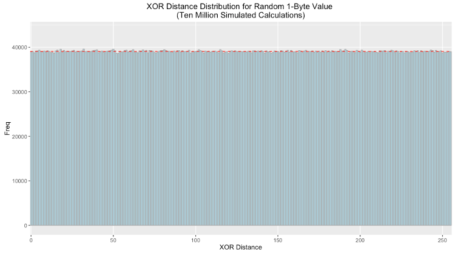

The Storj network consists of a number of distributed peers who provide storage capacity for lease to others. In its current implementation, these nodes store encrypted shards and their associated metadata in a [LevelDB]. LevelDB provides a number of features that make it desirable for this use case; this includes its lexicographically sorted keys providing fast lookups for content-addressable values, fast and efficient compression, and perhaps most notably its portability which allows the Storj software to run on a wide range of hardware including dated or underpowered computers.
However, due to the nature of LevelDB's design and its implementation in the Storj software, its performance suffers after the size of the database exceeds approximately 100GiB. This impact is larger on lower end systems and can also vary based on the type of disk in use. These performance issues seem to arise from LevelDB's compaction mechanism (which is an otherwise desirable feature). In addition to the cost of compaction, LevelDB blocks reads and writes during this process, which causes storage nodes to become effectively offline until the process completes.
These properties indicate that if the size of a single database can be given an upper bound, then the cost of compaction can be significantly reduced to an acceptable level. Futhermore, in using a single database, if one level becomes corrupted, deleted, or otherwise inaccessible, the entire database may become unusable and unrecoverable. For these reasons, the KFS system seeks to create a series of size-capped databases where data is stored in a given "shard" based on a deterministic metric to ensure a sufficiently random and even spread to bound the cost of compaction, to reduce the impact of corruption, and to completely eliminate the need to maintain an index or state machine to efficiently lookup stored data.
S-Buckets and Routing
KFS requires that there be a reference identifier, which can be any arbitrary
R bit key. This can be randomly generated upon creation of the database or
derived from some other application or protocol specific information. In the
Storj network, nodes are addressed with a 160 bit node identifier derived from
the public portion of an ECDSA key pair. This Reference ID is used to
calculate the database shard or S-Bucket to which a given piece of data
belongs. Collectively, these S-Buckets form the B-Table.
In KFS, there are a total of B S-Buckets, numbered 0-B-1. To determine
which bucket a piece of raw binary data belongs in, calculate the [distance]
between the first byte of the hash of the data and the first byte of the
reference ID. This is to say that if the distance between those bytes is 137,
then the raw binary data should be stored in S-Bucket 137. An S-Bucket has a
fixed size, S, in bytes. This means that a KFS database has a maximum size of
B * S bytes. Once an S-Bucket is full, no more data can be placed in it. Once
a KFS database is full, another should be created using a new Reference ID.
Given the default constants, KFS databases are capped at a maximum of 8TiB each.
Keying Data by Chunks
To optimize the efficiency of reads and writes in KFS, data is stored in C
sized chunks (or less), keyed by the full content's hash, followed by a
space and a numerical index. This is performed to ensure that key/value pairs
are small and that reading and writing data to and from a S-Bucket is done
sequentially and can allow for efficient streaming of data both in and out of
the S-bucket.
Since LevelDB sorts items lexicographically, keys for data chunks should be strings and consist of:
Hexidecimal(Hash) + ' ' + 00000N
The number of preceding zeroes in the numerical index should be set such that
a S-Bucket that contains only a single file split into C sized chunks can
still be read sequentially from the database. Using the default constants
would make the highest number index 262144, so the number of leading zeroes
should be less than or equal to five.
Ad-Hoc S-Bucket Initialization
Given the low cost of creating and opening a LevelDB, it is not necessary to
create all B S-Buckets at once. Instead, an S-Bucket can be created the first
time data is to be stored inside of it. Additionally, S-Buckets can be opened
and closed as needed, eliminating the potential overhead of opening a large
number of file descriptors. Operations on a given S-Bucket should be added to
a queue which when drained may trigger a close of the S-Bucket's underlying
database.
Kademlia's metric for determining distance is defined as the result of the XOR operation on a set of bits interpreted as an integer. As such, for two randomly generated sets of bits, the result is uniformly distributed. Therefore the XOR distance between pseudo-random first bytes of the reference ID and hash give any bucket an equal chance of being selected.
Below is the frequency distribution plotted with ten million simulated calculations. As expected the distribution is uniform (the red dotted line indicates the theoretical value each bin should have):

Even with a uniform distribution, as the node reaches capacity some buckets will fill sooner than others. Offers that would be sorted into these buckets should be declined and relayed to other nodes.
Constants
| Name | Description | Default |
|---|---|---|
| B | Number of columns in the B-table | 256 |
| S | Size (in bytes) of an S-Bucket | 34359738368 (32GiB) |
| C | Size (in bytes) of a file chunk | 131072 |
| R | Number of bits in the Reference ID | 160 |
Considerations Specific to Storj
- Storj farmers receive contracts for data shards that are already close to their own Node ID. To improve S-Bucket distribution, it may be desirable to double hash the data or otherwise force a degree of randomness before selecting a S-Bucket for storage.
- The use of KFS in the Storj network creates an upper limit to how much data can be stored by a given Node ID (or identity). This encourages farmers to operate multiple nodes with different identities which lends itself to better network integration.
- The use of HD (hierachical deterministic) private keys could allow a single farmer identity to assume multiple Reference IDs, thus eliminating the limit.
- KFS does not track or store metadata about the contents of a S-Bucket, which in the context of the Storj network would include contracts and other special information related to a piece of data. Applications should handle this via their own means.